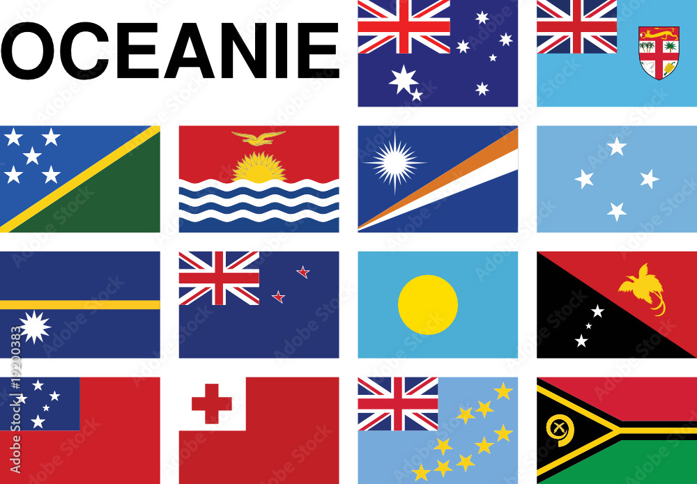

Oceania

Oceania is a region of the world that is not a continent in the strict sense. However, as this region is often assimilated to a continent by geographers, it can be considered the least extensive of the Earth's emerged continents. Located in the Pacific Ocean, it covers 8,525,989 km2 and includes more than 50 million inhabitants (2020), spread over sixteen independent states and fifteen territories. It is divided into four regions: Australasia, Micronesia, Melanesia, and Polynesia1,2, although this distinction has been criticized. Australia comprises most of its surface area and population, and while the rest of Oceania is a collection of 25,000 islands.